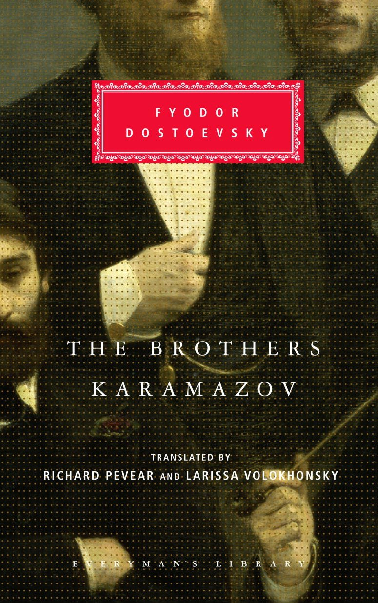

|  | 1879─1880 Frații Karamazov Romanul se concentrează pe temele sale teologice și filozofice preferate: originea răului, natura libertății și dorința de credință. Un tată dezordonat și răutăcios, Fiodor Pavlovici Karamazov, bate joc de tot ce este nobil și se angajează într-o bufonerie nepotrivită cu fiecare ocazie. Când fiii săi erau bebeluși, el i-a neglijat nu din răutate, ci pur și simplu pentru că i-a „uitat”. Cel mai mare, Dmitri, un bărbat pasionat capabil să iubească sincer atât „Sodoma”, cât și „Madona” în același timp, se ceartă cu tatăl său pentru bani și concurează cu el pentru favorurile unei femei „demonice”, Grușenka. Când bătrânul este ucis, dovezile circumstanțiale duc la arestarea lui Dmitri pentru crimă, care de fapt a fost comisă de al patrulea și ilegitim fiu, epilepticul rău intenționat Smerdiakov. Cel mai tânăr fiu legitim, Alioșa, este o altă încercare a lui Dostoievski de a crea o figură realistă a lui Hristos. Urmându-l pe înțeleptul călugăr Zosima, Alioșa încearcă să pună în practică dragostea creștină. Naratorul îl proclamă adevăratul erou al operei, dar cititorii sunt de obicei cel mai interesați de fratele mijlociu, intelectualul Ivan. |
FILM